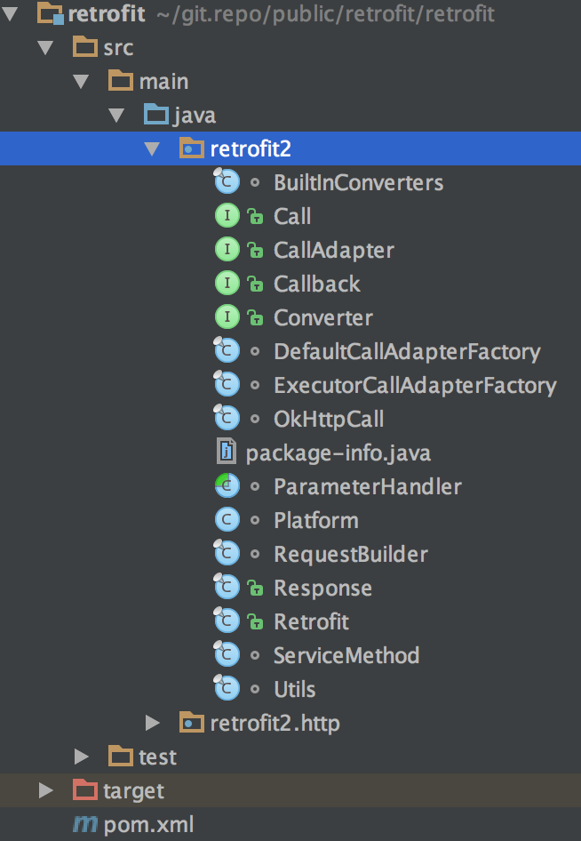

<!DOCTYPE HTML>
<html>
<head><meta name="generator" content="Hexo 3.9.0">
  <meta charset="utf-8">
  <meta http-equiv="X-UA-Compatible" content="IE=edge">
  <meta name="apple-mobile-web-app-capable" content="yes">
  <meta name="apple-mobile-web-app-status-bar-style" content="black">
  <meta name="google-site-verification" content>
  
  <title>【赏码会】HTTP Client中的瑞士军刀：Retrofit</title>
  <meta name="author" content="Emac">
   <meta name="description" content="写在前面最近开始在GitHub上找一些优秀的开源项目，跟团队一起阅读源代码，每周一次，每次一个半小时左右，美其名曰“赏码会”（还记得《唐伯虎点秋香》那句“赏花赏月赏秋香”吗？）。为什么要阅读源代码？好处举不胜举，比如学习如何合理的命名，如何写出简洁、清晰的注释，如何编写有效的单元测试，知道良好的编码">
  

  <meta property="og:title" content="【赏码会】HTTP Client中的瑞士军刀：Retrofit">
  <meta name="viewport" content="width=device-width, initial-scale=1, maximum-scale=1">
  <meta property="og:site_name" content="Emac">
 <meta property="og:image" content="undefined">
  
  <link href="/apple-touch-icon-precomposed.png" sizes="180x180" rel="apple-touch-icon-precomposed">
  <link rel="alternate" href="/atom.xml" title="Emac" type="application/atom+xml">
  <link rel="stylesheet" href="//cdn.bootcss.com/bootstrap/3.3.6/css/bootstrap.min.css">
  <link rel="stylesheet" href="//cdn.bootcss.com/font-awesome/4.5.0/css/font-awesome.min.css">
  <link rel="stylesheet" href="/css/m.min.css">
  <link rel="icon" type="image/x-icon" href="/favicon.ico">
</head>
</html>
<body>
  <div id='wx_pic' style='display:none;'></div>
  <div id="main">
    <div class="behind">
      <div class="back">
        <a href="/" class="black-color"><i class="fa fa-times" aria-hidden="true"></i></a>
      </div>
      <div class="description">
        &nbsp;拾贝
      </div>
    </div>
    <div class="container">
      

  <article class="standard post">
    <div class="title">
      
  
    <h1 class="page-title center">
        【赏码会】HTTP Client中的瑞士军刀：Retrofit
    </h1>
  


    </div>
    <div class="meta center">
      
<time datetime="2016-12-10T16:00:00.000Z">
  <i class="fa fa-calendar"></i>&nbsp;
  2016-12-11
</time>


    
    &nbsp;
    <i class="fa fa-tag"></i>&nbsp;
    <a href="/categories/coding/">coding</a>


    
    &nbsp;
    <i class="fa fa-tag"></i>&nbsp;
    <a href="/tags/原创/">原创</a>·<a href="/tags/赏码会/">赏码会</a>


    </div>
    <hr>
    <div class="picture-container">
      
    </div>
    <h2 id="写在前面"><a href="#写在前面" class="headerlink" title="写在前面"></a>写在前面</h2><p>最近开始在GitHub上找一些优秀的开源项目，跟团队一起阅读源代码，每周一次，每次一个半小时左右，美其名曰“赏码会”（还记得《唐伯虎点秋香》那句“赏花赏月赏秋香”吗？）。为什么要阅读源代码？好处举不胜举，比如学习如何合理的命名，如何写出简洁、清晰的注释，如何编写有效的单元测试，知道良好的编码风格是什么样的。有一些积累之后，可以试试看找一找隐藏在代码里的设计模式，加一些新的单元测试，想一想如果自己实现会如何设计，亦或者尝试提交一个PR，修复一个Issue。阅读源代码可以说是有百利而无一害，属于典型的第二象限的事情（参见<a href="http://product.dangdang.com/23592549.html" target="_blank" rel="noopener">《高效能人士的七个习惯》</a>）。</p>
<h2 id="Retrofit简介"><a href="#Retrofit简介" class="headerlink" title="Retrofit简介"></a>Retrofit简介</h2><p>第一次“赏码会”我选的是<a href="https://github.com/square/retrofit" target="_blank" rel="noopener">Retrofit</a>项目，为什么选它呢？第一，小巧（核心代码不到5000行），第二，高Star（17+K），第三，平时一直在用。先简单介绍一下Retrofit这个框架。Retrofit是<a href="https://squareup.com/global/en/pos" target="_blank" rel="noopener">Square</a>公司开源的一个Java实现的轻量级HTTP Client框架，本质上是对Square公司另一个开源框架OkHTTP的一层type-safe的封装。所谓的type-safe，我的理解就是将OkHTTP原生的Request/Response对象通过类型安全的方式转化为其他任意类型的对象，比如String，用户自定义类型等。</p>
<p>面向接口的声明式API定义风格是Retrofit最受欢迎的特性，例如下面的GitHubService接口的listRepos方法定义了GitHub的<a href="https://developer.github.com/v3/repos/#list-user-repositories" target="_blank" rel="noopener">List user repositories</a> API。</p>
<figure class="highlight java"><table><tr><td class="gutter"><pre><span class="line">1</span><br><span class="line">2</span><br><span class="line">3</span><br><span class="line">4</span><br></pre></td><td class="code"><pre><span class="line"><span class="keyword">public</span> <span class="class"><span class="keyword">interface</span> <span class="title">GitHubService</span> </span>&#123;</span><br><span class="line">  <span class="meta">@GET</span>(<span class="string">"users/&#123;user&#125;/repos"</span>)</span><br><span class="line">  Call&lt;List&lt;Repo&gt;&gt; listRepos(<span class="meta">@Path</span>(<span class="string">"user"</span>) String user);</span><br><span class="line">&#125;</span><br></pre></td></tr></table></figure>
<p>无需定义具体的实现类，就可以直接调用，例如：</p>
<figure class="highlight java"><table><tr><td class="gutter"><pre><span class="line">1</span><br><span class="line">2</span><br><span class="line">3</span><br><span class="line">4</span><br><span class="line">5</span><br></pre></td><td class="code"><pre><span class="line">Retrofit retrofit = <span class="keyword">new</span> Retrofit.Builder()</span><br><span class="line">    .baseUrl(<span class="string">"https://api.github.com/"</span>)</span><br><span class="line">    .build();</span><br><span class="line">GitHubService service = retrofit.create(GitHubService<span class="class">.<span class="keyword">class</span>)</span>;</span><br><span class="line">Call&lt;List&lt;Repo&gt;&gt; repos = service.listRepos(<span class="string">"octocat"</span>);</span><br></pre></td></tr></table></figure>
<p>有经验的Java程序员立刻就能看出，相对于其他的HTTP Client框架，比如<a href="https://hc.apache.org/" target="_blank" rel="noopener">Apache HttpClient</a>或者<a href="https://github.com/AsyncHttpClient/async-http-client" target="_blank" rel="noopener">Async Http Client</a>，使用Retrofit将使编程效率产生质的提升。</p>
<h2 id="核心类"><a href="#核心类" class="headerlink" title="核心类"></a>核心类</h2><p>从GitHub拉取Retrofit的源代码，导入retrofit子工程，核心代码都在retrofit包下。</p>
<p></p>
<p>核心类列举如下：</p>
<ul>
<li>Retrofit: Retrofit框架的门面类，大多数情况下，你的代码中只需要用到它。</li>
<li>ServiceMethod: 对应接口类中的一个方法（比如上文中的listRepos），负责解析方法签名中用到的各种注解，生成最终的Request对象。</li>
<li>Call: 类似于Java 8里面的CompletableFuture，提供异步支持。</li>
<li>CallAdapter: Retrofit默认只接受Call&lt;?&gt;作为方法返回类型，如果需要使用其他类型，就要添加额外的CallAdapter。</li>
<li>Converter: Retrofit默认只接受Response和Void作为Call&lt;?&gt;的类型参数，如果需要使用其他类型，就要添加额外的Converter。</li>
</ul>
<h2 id="解惑"><a href="#解惑" class="headerlink" title="解惑"></a>解惑</h2><p>和任何形式的阅读（读书，读人，读心）一样，要读懂源代码，一定要带着问题去读。为了帮助理解上述几个核心类的关系，简单列举几个我阅读代码时思考的问题，</p>
<h3 id="Q1：为什么只有接口？实现类在哪？"><a href="#Q1：为什么只有接口？实现类在哪？" class="headerlink" title="Q1：为什么只有接口？实现类在哪？"></a>Q1：为什么只有接口？实现类在哪？</h3><p>A: 答案很简单，因为使用了JDK的动态代理，非常讨巧的设计。</p>
<figure class="highlight java"><table><tr><td class="gutter"><pre><span class="line">1</span><br><span class="line">2</span><br><span class="line">3</span><br><span class="line">4</span><br><span class="line">5</span><br><span class="line">6</span><br><span class="line">7</span><br><span class="line">8</span><br><span class="line">9</span><br><span class="line">10</span><br><span class="line">11</span><br><span class="line">12</span><br><span class="line">13</span><br><span class="line">14</span><br><span class="line">15</span><br><span class="line">16</span><br><span class="line">17</span><br><span class="line">18</span><br><span class="line">19</span><br><span class="line">20</span><br><span class="line">21</span><br><span class="line">22</span><br><span class="line">23</span><br><span class="line">24</span><br><span class="line">25</span><br></pre></td><td class="code"><pre><span class="line"><span class="keyword">public</span> &lt;T&gt; <span class="function">T <span class="title">create</span><span class="params">(<span class="keyword">final</span> Class&lt;T&gt; service)</span> </span>&#123;</span><br><span class="line">  Utils.validateServiceInterface(service);</span><br><span class="line">  <span class="keyword">if</span> (validateEagerly) &#123;</span><br><span class="line">    eagerlyValidateMethods(service);</span><br><span class="line">  &#125;</span><br><span class="line">  <span class="keyword">return</span> (T) Proxy.newProxyInstance(service.getClassLoader(), <span class="keyword">new</span> Class&lt;?&gt;[] &#123; service &#125;,</span><br><span class="line">      <span class="keyword">new</span> InvocationHandler() &#123;</span><br><span class="line">        <span class="keyword">private</span> <span class="keyword">final</span> Platform platform = Platform.get();</span><br><span class="line"></span><br><span class="line">        <span class="meta">@Override</span> <span class="function"><span class="keyword">public</span> Object <span class="title">invoke</span><span class="params">(Object proxy, Method method, Object... args)</span></span></span><br><span class="line"><span class="function">            <span class="keyword">throws</span> Throwable </span>&#123;</span><br><span class="line">          <span class="comment">// If the method is a method from Object then defer to normal invocation.</span></span><br><span class="line">          <span class="keyword">if</span> (method.getDeclaringClass() == Object<span class="class">.<span class="keyword">class</span>) </span>&#123;</span><br><span class="line">            <span class="keyword">return</span> method.invoke(<span class="keyword">this</span>, args);</span><br><span class="line">          &#125;</span><br><span class="line">          <span class="keyword">if</span> (platform.isDefaultMethod(method)) &#123;</span><br><span class="line">            <span class="keyword">return</span> platform.invokeDefaultMethod(method, service, proxy, args);</span><br><span class="line">          &#125;</span><br><span class="line">          ServiceMethod&lt;Object, Object&gt; serviceMethod =</span><br><span class="line">              (ServiceMethod&lt;Object, Object&gt;) loadServiceMethod(method);</span><br><span class="line">          OkHttpCall&lt;Object&gt; okHttpCall = <span class="keyword">new</span> OkHttpCall&lt;&gt;(serviceMethod, args);</span><br><span class="line">          <span class="keyword">return</span> serviceMethod.callAdapter.adapt(okHttpCall);</span><br><span class="line">        &#125;</span><br><span class="line">      &#125;);</span><br><span class="line">&#125;</span><br></pre></td></tr></table></figure>
<h3 id="Q2：我不想用Call，怎样才能使用其他返回类型？"><a href="#Q2：我不想用Call，怎样才能使用其他返回类型？" class="headerlink" title="Q2：我不想用Call，怎样才能使用其他返回类型？"></a>Q2：我不想用Call，怎样才能使用其他返回类型？</h3><p>A: 刚才已经提到了，通过Retrofit.Builder#addCallAdapterFactory()添加相应的CallAdapter，例如想返回CompleteableFuture，可以使用Retrofit提供的<a href="https://github.com/square/retrofit/blob/master/retrofit-adapters/java8/src/main/java/retrofit2/adapter/java8/Java8CallAdapterFactory.java" target="_blank" rel="noopener">Java8CallAdapterFactory</a>。</p>
<h3 id="Q3：如何打印请求和响应日志？"><a href="#Q3：如何打印请求和响应日志？" class="headerlink" title="Q3：如何打印请求和响应日志？"></a>Q3：如何打印请求和响应日志？</h3><p>A: 跟动态设置Headers类似，可以自定义用于打印日志的<a href="https://github.com/square/okhttp/wiki/Interceptors" target="_blank" rel="noopener">OkHttp interceptor</a>，然后添加到自己创建的OkHttpClient实例，再绑定Retrofit.Builder#client()。</p>
<h2 id="漫谈"><a href="#漫谈" class="headerlink" title="漫谈"></a>漫谈</h2><p>总的来说，Retrofit框架设计精巧，上手简单，开发效率高，但也存在一些不足。第一，跟OkHTTP框架绑定太死，不像<a href="https://github.com/OpenFeign/feign" target="_blank" rel="noopener">Feign</a>那么灵活，支持多种Client。第二，和JDK的动态代理强绑定，对其他AOP方式不友好，比如这个<a href="https://github.com/square/retrofit/issues/2113" target="_blank" rel="noopener">Issue</a>提到的Hystrix集成问题。</p>
<p>今天先写到这里，未来我会不定期放一些“赏码会”的心得，欢迎到GitHub<a href="https://github.com/emac/emac.github.io/issues/2" target="_blank" rel="noopener">留言</a>交流。</p>
<h2 id="传送门"><a href="#传送门" class="headerlink" title="传送门"></a>传送门</h2><ul>
<li><a href="http://square.github.io/retrofit/" target="_blank" rel="noopener">Retrofit 官网</a></li>
<li><a href="https://github.com/square/retrofit" target="_blank" rel="noopener">Retrofit GitHub</a></li>
</ul>


  </article>
  </script>


    </div>
  </div>
  <footer class="page-footer"><div class="clearfix">
</div>
<div class="right-foot container">
    <div class="firstrow">
        <a href="#top" >
        <i class="fa fa-arrow-right"></i>
        </a>
        © emacoo.cn 2015-2022
    </div>
    <div class="secondrow">
        <a href="https://github.com/gaoryrt/hexo-theme-pln">
        
        </a>
    </div>
</div>
<div class="clearfix">
</div>
<script async src="//busuanzi.ibruce.info/busuanzi/2.3/busuanzi.pure.mini.js"></script>
<div class="busuanzi center">
    <span id="busuanzi_container_site_pv">本站总访问量<span id="busuanzi_value_site_pv"></span>次</span>
    <span id="busuanzi_container_site_uv">本站访客数<span id="busuanzi_value_site_uv"></span>人次</span>
    <span id="busuanzi_container_page_pv">
      本文总阅读量<span id="busuanzi_value_page_pv"></span>次
    </span>
</div>
</footer>
  <script src="//cdn.bootcss.com/jquery/2.2.1/jquery.min.js"></script>
<script src="/js/search.js"></script>
<script type="text/javascript">

// comments below to disable loading animation
function revealOnScroll() {
  var scrolled = $(window).scrollTop();
  $(".excerpt, .index-title, .index-meta, p").each(function() {
    var current = $(this),
      height = $(window).outerHeight(),
      offsetTop = current.offset().top;
    (scrolled + height + 50 > offsetTop) ? current.addClass("animation"):'';
  });
}
$(window).on("scroll", revealOnScroll);
$(document).ready(revealOnScroll)

// disqus scripts


// dropdown scripts
$(".dropdown").click(function(event) {
  var current = $(this);
  event.stopPropagation();
  $(current).children(".dropdown-content")[($(current).children(".dropdown-content").hasClass("open"))?'removeClass':'addClass']("open")
});
$(document).click(function(){
    $(".dropdown-content").removeClass("open");
})

// back to top scripts
$("a[href='#top']").click(function() {
  $("html, body").animate({ scrollTop: 0 }, 500);
  return false;
});


var path = "/search.xml";
searchFunc(path, 'local-search-input', 'local-search-result');

</script>

</body>
</html>
